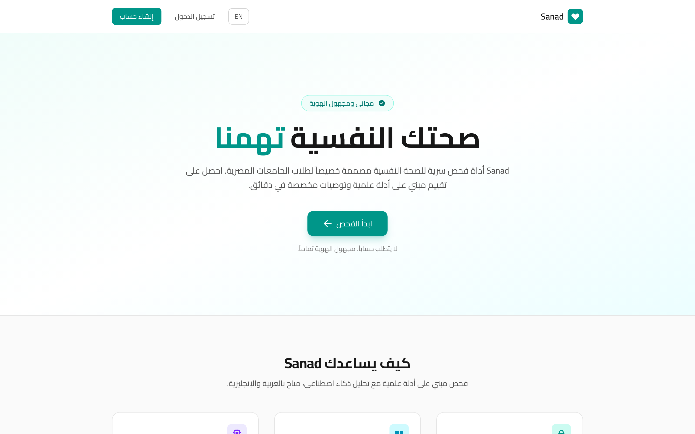
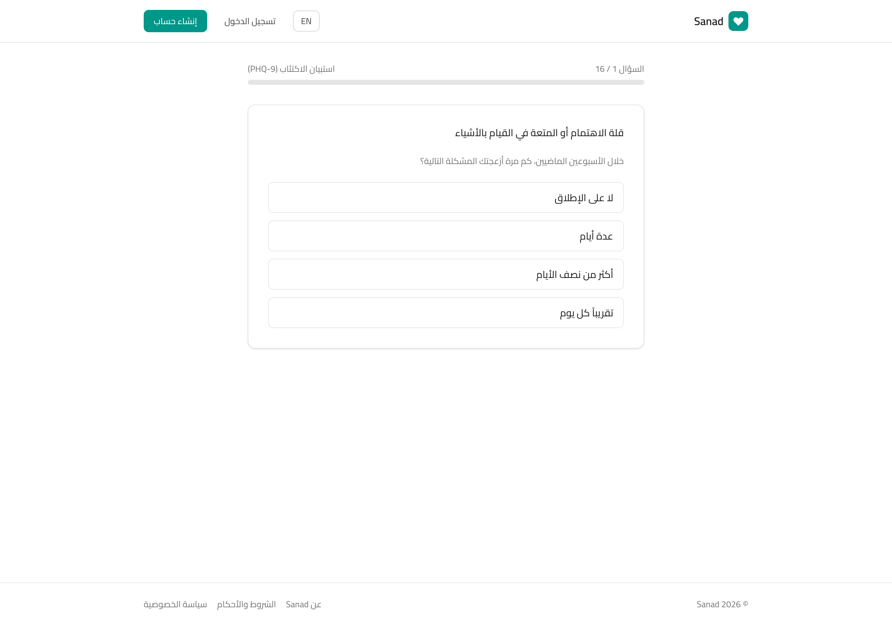
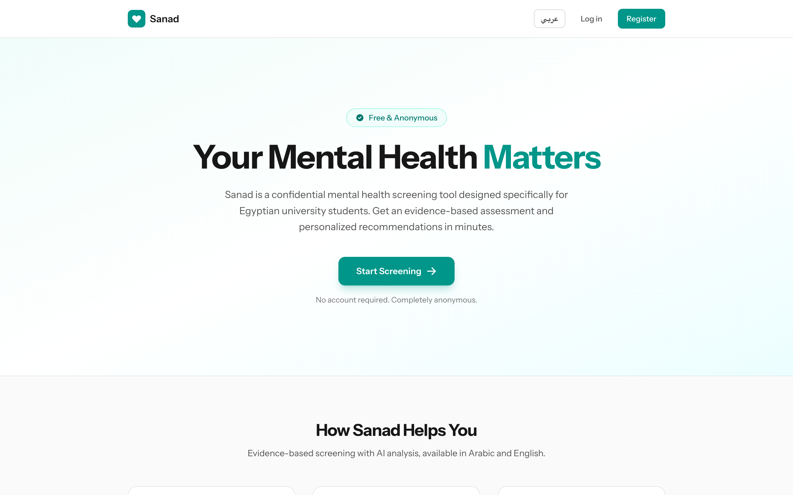

Applied Diploma in Artificial Intelligence
Sanad.
AI-Powered Mental Health Screening for Egyptian University Students
نظام فحص الصحة النفسية المدعوم بالذكاء الاصطناعي لطلاب الجامعات المصرية
The Problem · A Documented Crisis
Egyptian students are in distress — and almost no one gets help
National multi-centre study · 21 universities · n = 3,240 · BMC Psychiatry (Baklola et al., 2023)
68.1%
screen positive for psychological distress (≈2× the global student average)
35.3%
reported suicidal ideation
90.3%
of distressed students never sought professional help
18
mental-health hospitals for a population of 100M+
The barrier is not a shortage of students who need help — it is the near-total absence of accessible, stigma-free, Arabic-language entry points.
Research Gap & Question
No Arabic-language AI screening tool exists for this population
- Validated proven tools (PHQ-9, GAD-7) have established Arabic psychometrics — but sit unused.
- Arabic NLP has matured — CAMeLBERT (NYU Abu Dhabi) offers explicit Egyptian-dialect coverage.
- English chatbots (Woebot, Wysa) show clinical efficacy — yet no Arabic equivalent exists.
- Abd-Alrazaq et al. (2020) reviewed 41 chatbot studies and named Arabic a priority gap.
RQ: Can a focused, culturally-adapted AI web application meaningfully close the gap between mental-health need and help-seeking in Egyptian universities?
Objectives
What Sanad sets out to do
- Deliver a bilingual (AR/EN) web app administering validated instruments — PHQ-9, GAD-7, PC-PTSD-5.
- Build an Arabic NLP classifier (CAMeLBERT) that reads free-text distress and grades severity.
- Generate personalized, culturally-appropriate coping strategies and resource referrals.
- Evaluate accuracy, usability & real-world screening through a controlled pilot study.
- Remove every structural barrier — anonymous, free, no registration, on any smartphone.
Methodology · System Architecture
A three-component pipeline
📋1 · Structured Screening
PHQ-9 · GAD-7 · PC-PTSD-5 in Arabic, one item at a time, RTL + visual scales
→
🧠2 · Arabic NLP Engine
Fine-tuned CAMeLBERT-Mix classifies optional free-text into 4 severity classes
→
🎯3 · Recommendation Generator
Psychoeducation + CBT coping strategies + ranked resource referrals
Ensemble scoring: final severity = 70% questionnaire + 30% NLP — so students who write little are still graded accurately, while free-text adds nuance.
Core AI · Arabic NLP Classification
Reading distress in Egyptian Arabic
- Base model: CAMeLBERT-Mix — trained on MSA + dialectal Arabic incl. Egyptian Masri (عامية).
- Fine-tuning data: 2,400 labeled Arabic distress posts + 180 clinician-labeled pilot responses.
- Objective: 4-class — none / mild / moderate / severe distress.
- Crisis safeguard: PHQ-9 item-9 ≥ 2 triggers immediate referral (Nefsy.com + hotline).
Why dialect matters
Egyptian Arabic differs sharply from Modern Standard Arabic. Standard pipelines miss hedging, sarcasm and indirect expressions of self-harm — exactly where screening fails. Dialect-aware modelling is the methodological core.
CAMeLBERT-Mix
Transformer · fine-tuned
4-class softmax
70/30 ensemble
The Implemented System · Live
Not a prototype — a deployed, bilingual product
Running in production at sanad.gaitco.com · anonymous · no registration · full Arabic RTL
sanad.gaitco.com

Arabic-first landing«صحتك النفسية تهمنا» — culturally framed entry point
sanad.gaitco.com/screening

Step-by-step screeningPHQ-9 · one item at a time · reduces drop-off
sanad.gaitco.com · EN

One-tap bilingual switchIdentical flow in English with LTR layout
Results · Model Performance
84.2% classification accuracy
Held-out validation set · n = 240 clinician-labeled responses · 60 per class · weighted F1 = 0.84
Reading the result
Strongest at the clinically critical poles — confidently separating "no distress" from "severe." The mild class is hardest (F1 .81): the neutral↔mildly-negative boundary is blurred by dialectal understatement — a known finding in Arabic sentiment research, and our first improvement target.
F1-score by severity class
Results · Pilot Study
Field evidence matches the national picture
120 undergraduates · 2 public universities (Mansoura, Tanta) · 4 weeks · 91% completion, no incentive
Moderate-to-severe distress detected — external-validity evidence for the screening approach.
91%
completed full screening without dropout
10.8%
triggered the crisis pathway → immediate referral
Results · Usability & Impact
The tool is trusted — and it reaches people first
Post-session survey · n = 108 · 90% response rate
79%
said Sanad was the
first structured mental-health resource they had ever accessed.
Conclusion & Future Work
A low-cost, scalable first step
Contribution
Sanad shows a focused AI web app can bridge Egypt's gap between high distress prevalence (68.1%) and near-zero help-seeking — 84.2% accuracy, 88% satisfaction, the first resource for 79% of users.
AnonymousFreeArabic-firstNo registration
Future work
- Larger Egyptian-dialect dataset → fix the mild-distress boundary
- Religiously & culturally informed coping strategies
- Longitudinal tracking + RCT for clinical evidence
- WhatsApp deployment to reach non-web users
Thank You
Questions & live demo
See Sanad in action — bilingual screening, AI analysis and crisis detection, live.
شكراً لحضراتكم